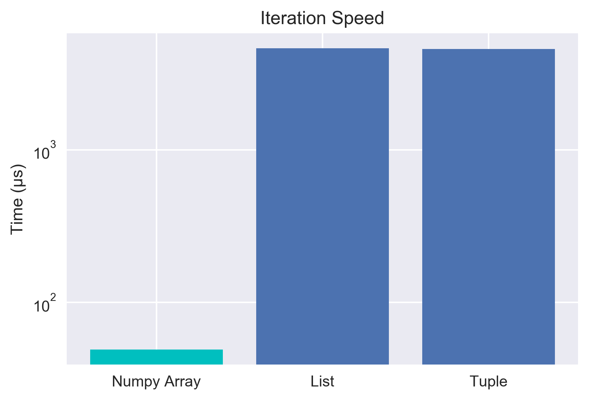
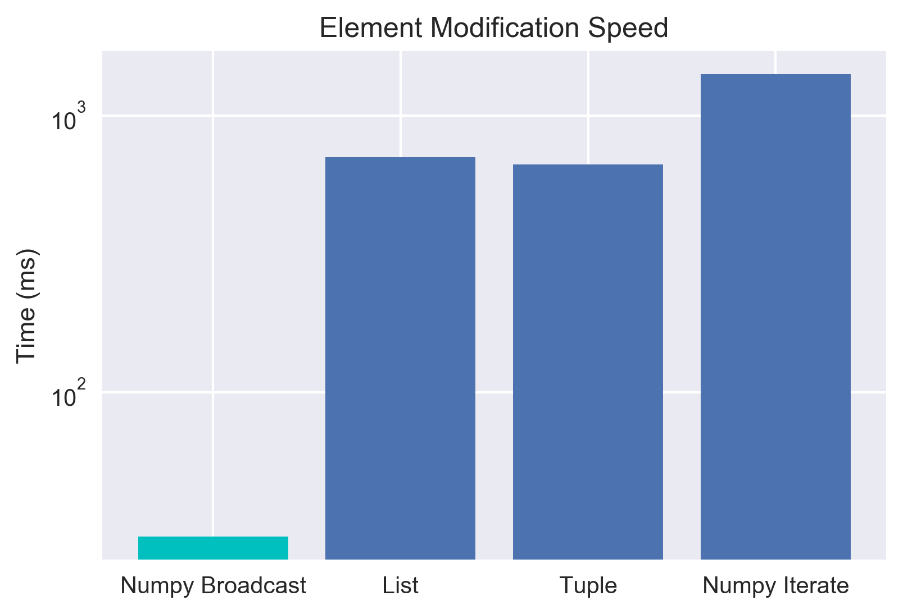
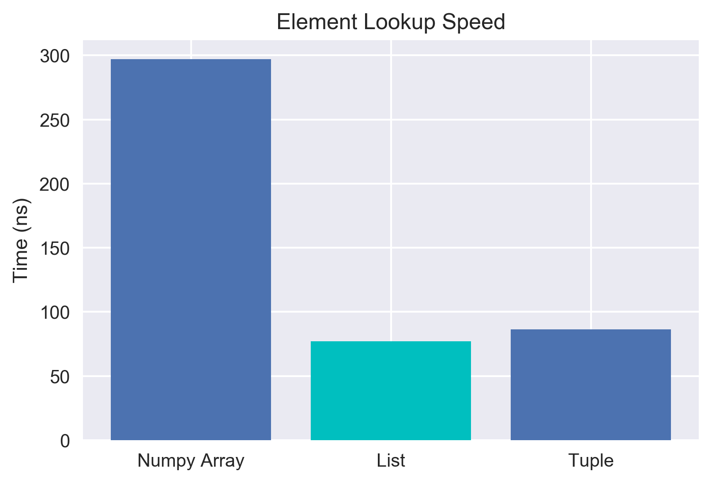
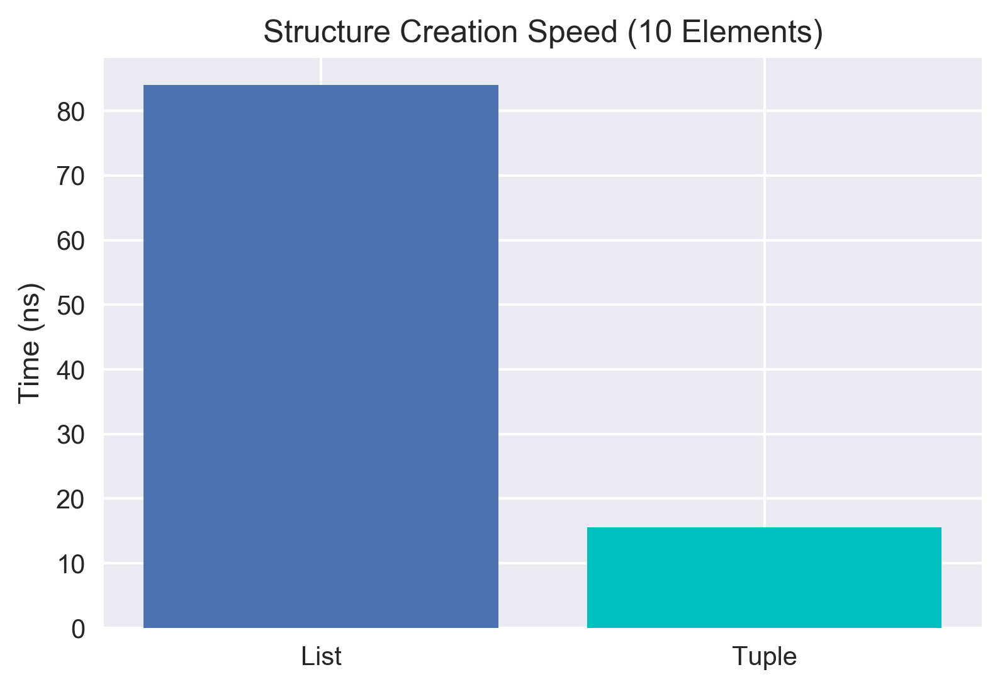
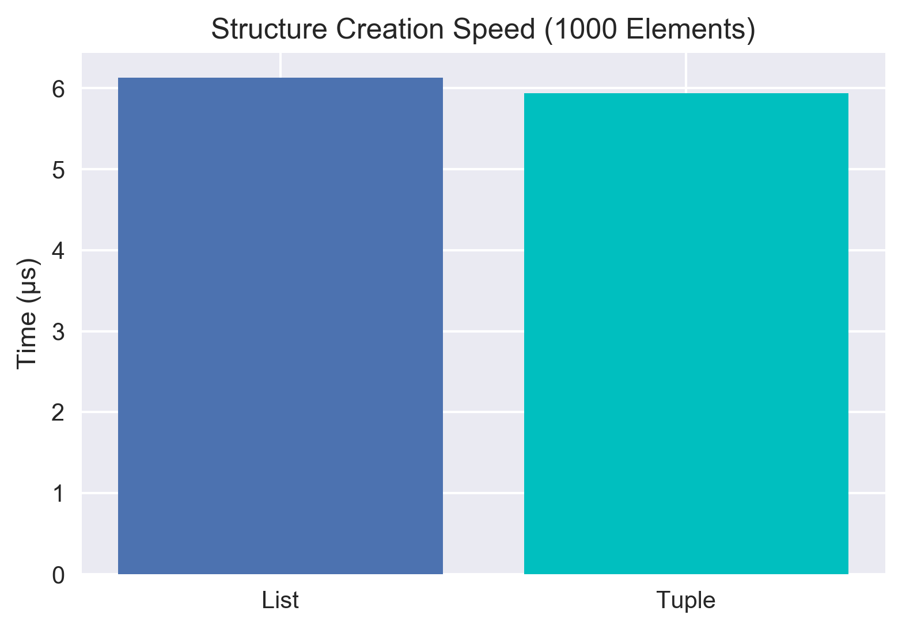
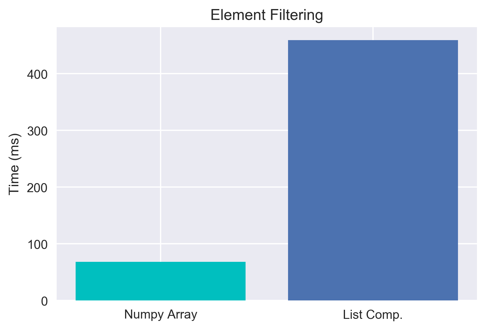

Are Tuples Faster than Lists?
Nov. 30, 2017 - PythonA follow up to this post testing numpy vectorization speed is here.
There are several myths flying around the Python-o-sphere that I hear repeated all the time. One of the main ones, that seems to be very commonly believed, is that tuples are inherently faster than lists. It has a ring of truth to it: tuples are immutable and less flexible than lists, so they should be faster. On top of this, the way the memory is allocated for tuples is generally in large blocks with very low overhead, since they are immutable. For lists, Python appends small memory blocks in a willy-nilly sort of way - so why wouldn't consecutive memory be faster? On the other hand, I haven't noticed major upside in speed from using tuples in past projects, so maybe this isn't true? The only way to know is to test. Alongside this, another common myth I want to investigate is that we should just "turn any list of common types into arrays - it's SOOO much faster." Again, I wasn't sure... so I figured, why not run some tests? Let's start by getting some data to play with.
<class 'numpy.ndarray'>
<class 'list'>
<class 'tuple'>
<class 'list'>
<class 'tuple'>
So we now have data consisting of an numpy array, a list, and a tuple... all filled with exactly the same data. Now we can start doing some speed testing with the various objects to see who outperforms who. Let's start out by looking at just the iteration speed in order to calculate the sum of the elements. For the numpy array, we'll just use the built in method to sum it up for now and investigate the iteration speed of numpy arrays later. For the record, the built in sum function for numpy is a vectorized method and is super fast, so we expect it to be dominant. Just so we're all on the same page, lower time is faster and therefore better.
NOTE: I originally ran all of this in a Jupyter Notebook, making use of the "magic" timeit function to measure the speed of the response. For convenience of viewing, I'm combining all the cells here. In the code output, I'm going to add some labels for readability as well.
Numpy Sum: 49.3 µs ± 1.5 µs per loop
List: 4.62 ms ± 129 µs per loop
Tuple: 4.58 ms ± 213 µs per loop
List: 4.62 ms ± 129 µs per loop
Tuple: 4.58 ms ± 213 µs per loop
Note the log scale! The built in for numpy is super fast - as expected. However, we're interested in whether tuples are faster than lists... and for iterations, it looks like they aren't! Let's get even deeper by looking at trying to modify all of the contents in the list. This is where we fully expect the numpy array to shine due to vectorization/broadcasting. Let's take a look, then we'll chat about what that last thing means.
Array Broadcasting: 30.2 ms ± 866 µs per loop
List: 707 ms ± 69.9 ms per loop
Tuple: 664 ms ± 7 ms per loop
Array Iteration: 1.41 s ± 9.09 ms per loop
List: 707 ms ± 69.9 ms per loop
Tuple: 664 ms ± 7 ms per loop
Array Iteration: 1.41 s ± 9.09 ms per loop
Excellent, this follows along with our initial expectation. The whole point of numpy arrays is that they are LIGHTNING fast when operations are done in a vectorized way. "Vectorization" here means that the code is being applied to the whole set at once, instead of needing to iterate through. For example, with the a+0.5 above, the 0.5 is being added to EVERY element. This is also called broadcasting - and it's just unbelievably fast.
We also note something weird given all the myths about tuples being inherently speedier than lists. The lists and tuples were pretty much the same access speed when iterating through! However, there's a question about whether the list comprehension is causing that. Let's get even simpler and just try looking up an element and adding it to a predefined variable. Certainly if a tuple is faster we should see a better lookup time here.
Array: 297 ns ± 12.3 ns per loop
List: 77.1 ns ± 1.07 ns per loop
Tuple: 86.4 ns ± 1.27 ns per loop
List: 77.1 ns ± 1.07 ns per loop
Tuple: 86.4 ns ± 1.27 ns per loop
Neat! It looks like we can draw two conclusions. First, accessing data inside a numpy array is relatively slow if you're trying to just grab it by index. Second, lists seem to be about the same as tuples in this case, and if anything might be a touch faster in a pure lookup attempt! That's pretty unexpected for me - but also quite cool. After seeing this - I really started to wonder about where the myth that tuples are "SO MUCH FASTER" than lists came from. That led me down the path of looking at how memory is allocated for tuples vs lists.
Structure Creation
When tuples are created in memory, Python blocks off a chunk of the memory and assigns relatively little overhead to the memory since the contents of a tuple are immutable. With this low overhead, it's actually quite quick to make a new tuple. Lists on the other hand must create the memory chunk, but also allow for the types of data stored in the list to change. This extra requirement slows down the creation of a list. How much though?
List (10 elements): 84 ns ± 1.33 ns per loop
Tuple (10 elements): 15.6 ns ± 0.109 ns per loop
List (1000 elements): 6.13 µs ± 106 ns per loop
Tuple (1000 elements): 5.94 µs ± 423 ns per loop
Tuple (10 elements): 15.6 ns ± 0.109 ns per loop
List (1000 elements): 6.13 µs ± 106 ns per loop
Tuple (1000 elements): 5.94 µs ± 423 ns per loop

For relatively small data, the tuple creation is a factor of 5x faster at creating structures. However, that doesn't seem to hold true with scale - as we add more elements the act of adding the elements to the structure seems to become more important than the saving in the overhead. By the time we get to 1000 elements, we only see a factor of 1.03 difference between the two! This suprised me somewhat again, as the more I read about this topic, the more it seemed like the internet's consensus was that tuples were much faster to create. That does seem to be true for small scale data, but that difference doesn't seem to hold as the data gets larger. I tried this with 10,000 elements as well and saw roughly the same 1.03 factor. Also of note, I didn't compare numpy arrays here, as to create them you generally must create either a list or tuple first. I think the conclusion here is that if you need to create millions and millions of small python structures (like if you're importing from a SQL database row-by-row) a tuple may actually have some performance advantages.
Vectorization
So we've now debunked a few Python data-structure myths. However, doing so has left me with one last open question on the topic - if numpy arrays are so slow to access data, why does everyone love them so much for their speed. It turns out that there's a lot of ways to vectorize operations. Let's take a look at using a mask and compare it to getting the same result with a list comprehension. So the idea is we'll take our data, and say let's filter out all the elements that don't meet some condition.
Array Masking: 68.1 ms ± 806 µs per loop
List Comprehension: 459 ms ± 5.81 ms per loop
Sum: 0 (the two outputs are equivalent)
List Comprehension: 459 ms ± 5.81 ms per loop
Sum: 0 (the two outputs are equivalent)
Oh LAWD, that's beautiful. These are totally equivalent operations in terms of results, but by making clever use of numpy's masking/filtering method, we sped things up by ~6.75x. It turns out for most computations, it's possible to find a vectorizable method of doing the computation - which results in crazy fast computations. After messing around with this a bit, I'm deeply and passionately in love with numpy arrays.
Bonus Myth: Generators are WAY faster than lists
I've also often heard folks talk about using generators to speed up their code. So I wondered, does this actually work? Let's try messing with the same simple example as above where we want to add 0.5 to the values in our data.
Generator: 979 ms ± 34.6 ms per loop
Nope, it's still slow! Our list comprehension took 707ms, this took 979ms. This is a bit of a contrived example - but it demonstrates that generators are not inherently faster than lists or tuples. Instead, we should remember what a generator's real purpose is: the generator doesn't have to allocate (much) memory to itself, and instead can yield one element at a time from the other elements already in memory (or from hard disk directly if we're reading from a file). Instead of remembering a whole file, it instead just needs to remember things like, "what line was I reading from in that file?" This is an excellent property! It's just important to remember that generators aren't ALSO faster. They're great tools, but not silver bullets.